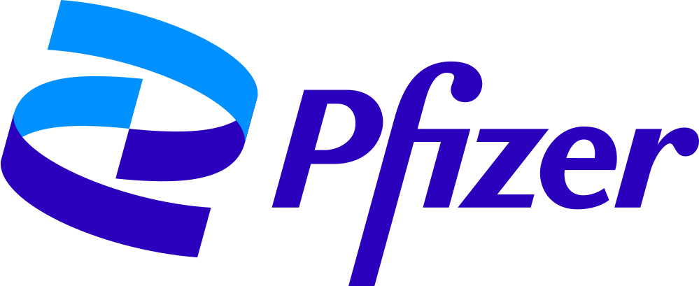

Garden Health| 創業チームFounding team | UIUC、大阪大学、京都大学の出身。AI 研究者と臨床データ解析の実務者が同じチームにいる。From UIUC, Osaka University and Kyoto University. AI researchers and clinical data-analysis practitioners in one team. |
| 専門領域Disciplines | 機械学習と LLM エージェント、臨床薬理とファーマコメトリクス、生物統計、ソフトウェア工学とセキュリティ。Machine learning and LLM agents; clinical pharmacology and pharmacometrics; biostatistics; software engineering and security. |
| 拠点Locations | 米国本社と Keiji AI Japan。日本拠点は日本の製薬企業との共同開発と導入支援を担い、日本語で対応する。US headquarters and Keiji AI Japan. The Japan office handles co-development and deployment support for Japanese pharma, in Japanese. |
臨床データを外部の AI に渡せない。社内テンプレートを汎用 AI は知らない。AI が書いた文書の根拠を監査で示せない。Clinical data cannot go to an external AI. A general AI knows nothing of your templates. Auditors cannot trace what it wrote.
LLM に書かせた解析コードは毎回違う。数値を作ってしまう。検証にかかる時間が、自分で書く時間を上回る。LLM-written analysis code differs every run. It invents numbers. Validating it takes longer than writing it.
担当者によって結果が違う。ベテランの判断は属人化し、新人に引き継がれない。試験ごとにゼロから作り直す。Results depend on who did the work. Senior judgment stays in senior heads. Every study starts from zero.
模擬または過去の 1 試験で ADaM から報告書まで一周するパイロットから始め、貴社テンプレートへの適合を共同で進める。A pilot on one mock or historical study, ADaM to report; fit to your templates is done together.